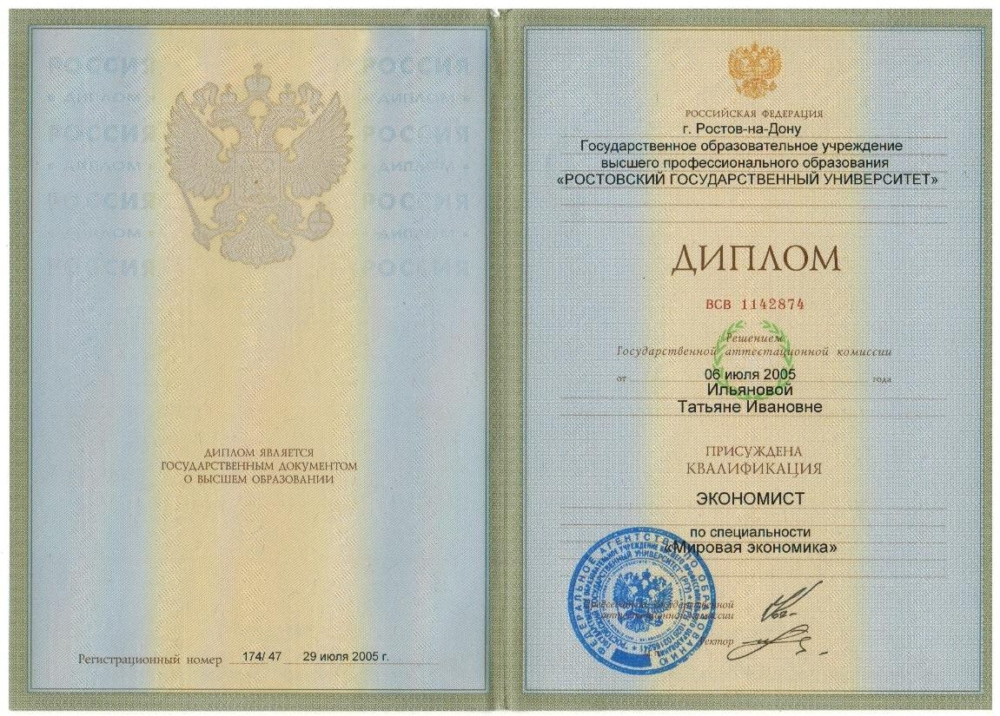
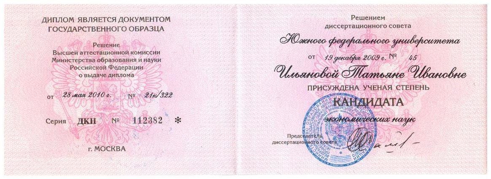
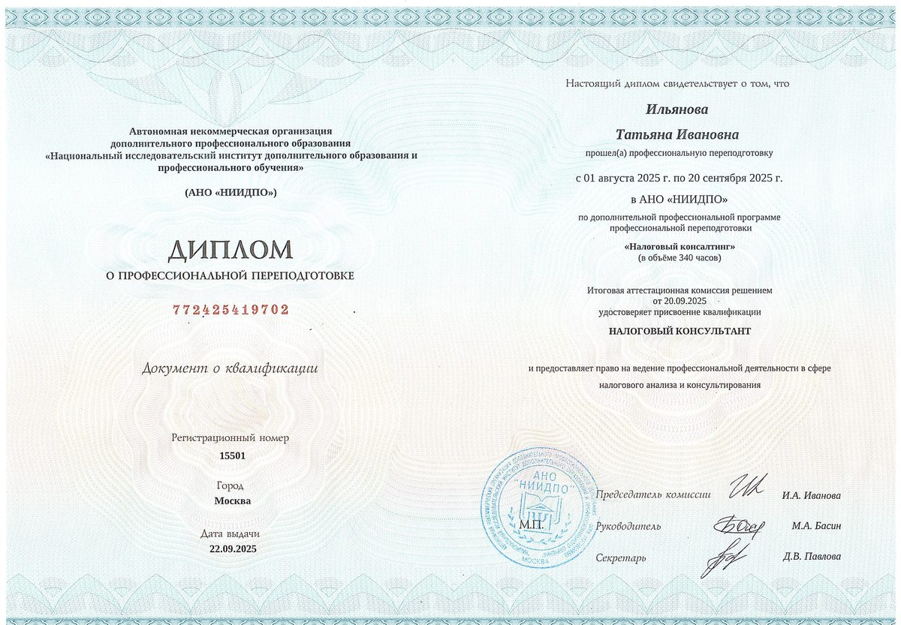
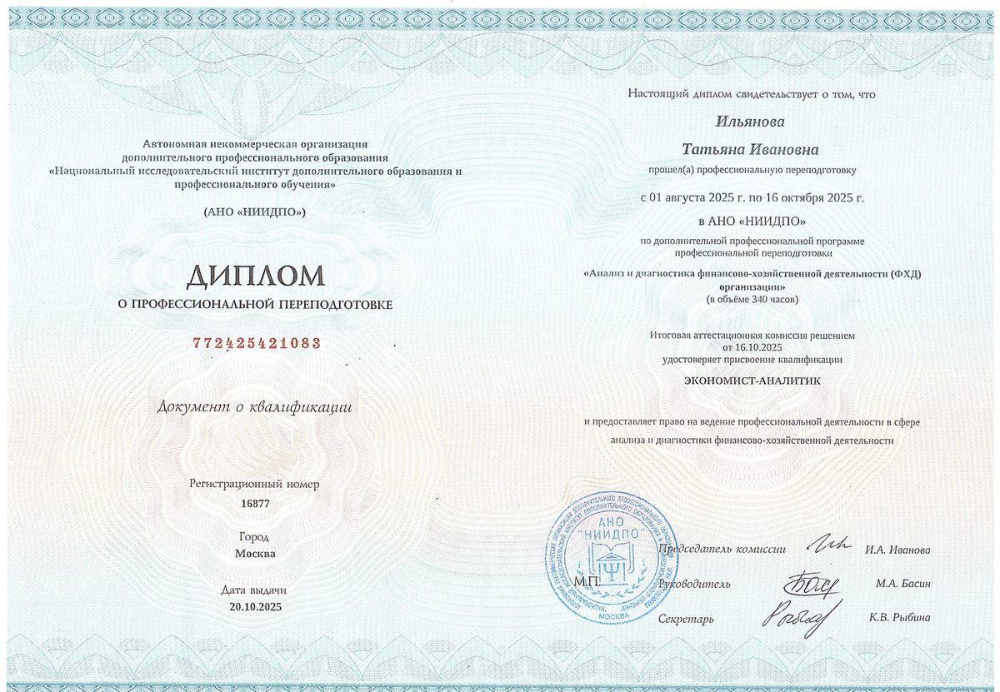
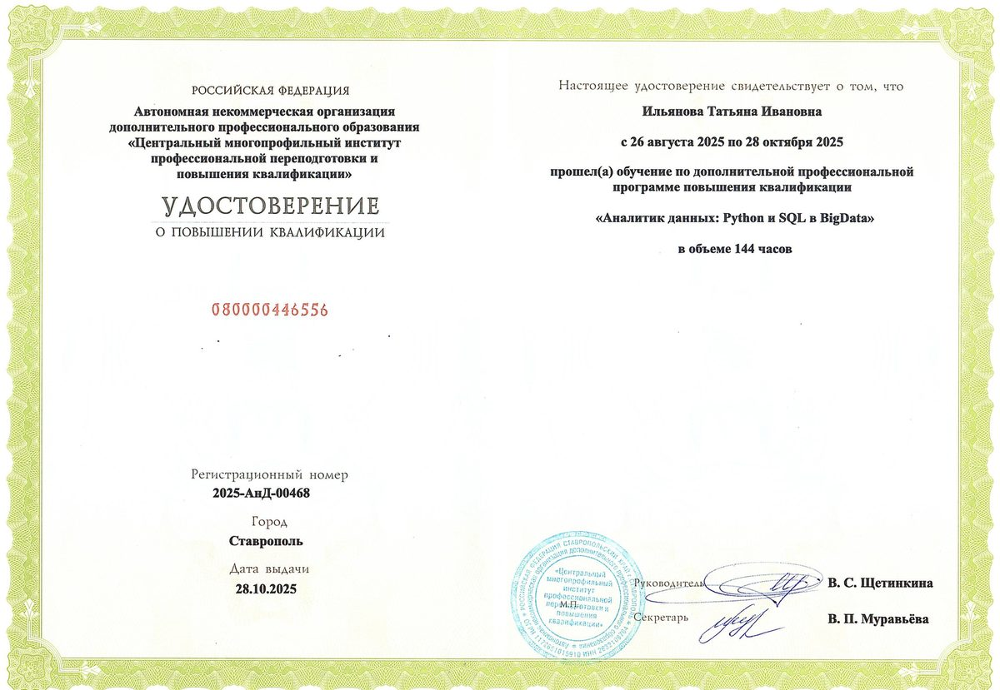

ЛИСТ 1 — СОПРОВОЖДЕНИЕ ИП И ООО
Наша компания больше,
чем бухгалтерия!
Гарантируем правильность всей финансовой отчётности. Берём на себя налоги, учёт и общение с ФНС — вы занимаетесь бизнесом.
- 2010 НА РЫНКЕ С
- 24/7 БЕЗ ВЫХОДНЫХ
- 100% ГАРАНТИЯ ОТЧЁТНОСТИ
- 01Регистрация ИП и ООО — под ключ
- 02Ведение учёта: ОСНО, УСН, ПСН
- 03Ответы на требования ФНС
РОСТОВ-НА-ДОНУ
И УДАЛЁННО ПО РФ
ЧЕРНОГОРИЯ · АРМЕНИЯ
ЛИСТ 2 — ЗАЧЕМ ЭТО ВАМ
РОСТОВ-НА-ДОНУ · УДАЛЁННО ПО РФ
Вы предприниматель, и у вас нет времени и желания разбираться в хитростях налогового законодательства?
Тогда обращайтесь к нам!
ЛИСТ 3 — ПЕРЕЧЕНЬ УСЛУГ
Что мы делаем
ПОЗИЦИЙ: 08
-
01
Регистрация и ликвидация
Открытие и закрытие ООО и ИП — под ключ, без походов по инстанциям.
ИП · ООО -
02
Ведение бухучёта
Любая сложность и сфера: ОСНО, УСН, ПСН. Полное сопровождение.
ИП · ООО -
03
3-НДФЛ для физлиц
Подготовка и сдача деклараций, возврат и вычеты.
ФИЗЛИЦО -
04
Налоговые требования
Ответы на требования, пояснения, разногласия к актам проверок.
ИП · ООО -
05
Кадровый и воинский учёт
Ведём документы по сотрудникам и воинский учёт за вас.
ИП · ООО -
06
Внутренний аудит
Проверка ООО и ИП, оценка состояния учёта, аудит рабочих мест.
ИП · ООО -
07
Управленческий учёт
Постановка и внедрение — чтобы видеть реальные цифры бизнеса.
ООО -
08
Консультации
Бухучёт, налоги, а также опытный юрист: гражданское, налоговое, административное право.
ИП · ООО · ФИЗЛИЦО
СТОИМОСТЬ СЧИТАЕМ ИНДИВИДУАЛЬНО · ФИКСИРУЕМ ЗАРАНЕЕ
ЛИСТ 4 — ОТКРЫТИЕ БИЗНЕСА
Открываете ИП или ООО?
ПОРЯДОК РАБОТЫ · 4 ШАГА
Сопровождаем с первого дня. Поможем не наделать дорогих ошибок на старте, когда каждое решение влияет на налоги впереди.
Хочу открыть бизнесРЕЖИМЫ: ОСНО · УСН · ПСН
ПОДАЧА ДОКУМЕНТОВ — БЕЗ ВАШЕГО УЧАСТИЯ
- 01
Выберем режим. Посчитаем налоговую нагрузку и подскажем самый выгодный.
- 02
Зарегистрируем. Подготовим документы и подадим — без вашей беготни.
- 03
Поставим учёт. Настроим всё так, чтобы отчётность шла как часы.
- 04
Будем рядом. Отвечаем на вопросы и держим связь 24/7.
ЛИСТ 5 — УДАЛЁННОЕ СОПРОВОЖДЕНИЕ
Живёте за рубежом,
а бизнес в России?
Ведём учёт и отчётность полностью удалённо для граждан РФ в Черногории, Армении и других странах. Российская отчётность остаётся в порядке, где бы вы ни были — на связи в вашем часовом поясе.
ГДЕ РАБОТАЕМ
- ЧерногорияONLINE
- АрменияONLINE
- Остальной мирONLINE
СВЯЗЬ — В ВАШЕМ ЧАСОВОМ ПОЯСЕ
ДОКУМЕНТЫ — ОНЛАЙН
ЛИСТ 6 — О НАС
Почему нам доверяют
ИП БЫКОВСКАЯ Е. С. · ОГРНИП 310616426500023
- НА РЫНКЕ БУХУСЛУГ С2010
- НА СВЯЗИ24/7
- ВЕДЁТ ВАС1 аудитор
- ГАРАНТИЯ ОТЧЁТНОСТИ100%
Вас ведёт один аудитор, а не служба поддержки: тот же человек отвечает на вопросы, сдаёт отчётность и разговаривает с налоговой.
Стоимость считаем под форму бизнеса, режим налогообложения и число операций — и называем фиксированную сумму заранее, без скрытых доплат.
ОТВЕЧАЕМ В TELEGRAM, ПО ТЕЛЕФОНУ И ПОЧТЕ
КВАЛИФИКАЦИЯ — ПРИЛОЖЕНИЯ К ЛИСТУ
ОРИГИНАЛЫ — ПО ЗАПРОСУ
-

П-1 ВЫСШЕЕ · ЭКОНОМИСТ
-

П-2 КАНДИДАТ ЭКОНОМ. НАУК
-

П-3 НАЛОГОВЫЙ КОНСУЛЬТАНТ
-
П-4 ВНУТРЕННИЙ АУДИТОР
-

П-5 ЭКОНОМИСТ-АНАЛИТИК
-

П-6 ПОВЫШЕНИЕ КВАЛИФИКАЦИИ
ЛИСТ 7 — ВОПРОСЫ И ОТВЕТЫ
Частые вопросы
ВОПРОСОВ: 07
01Нужен ли бухгалтер сразу после открытия ИП?
На старте — да, хотя бы как консультант. Ошибка с выбором системы налогообложения или пропуск первого отчёта оборачиваются штрафами и блокировкой счёта. Мы помогаем с первого дня: выбираем режим, ставим учёт и берём отчётность на себя.
02Какую систему налогообложения выбрать новому ИП?
Зависит от вида деятельности, оборота и расходов. Чаще подходит УСН «Доходы» или патент, реже — УСН «Доходы минус расходы» или ОСНО. Считаем налоговую нагрузку под вашу ситуацию до подачи документов.
03Что делать, если пришло требование от ФНС?
Не игнорировать — у требований жёсткие сроки, а молчание ведёт к штрафам и блокировке счёта. Пришлите требование нам: подготовим пояснения и документы, при необходимости — возражения на акт. Общение с налоговой берём на себя.
04Сколько стоит бухгалтерское сопровождение?
Зависит от формы бизнеса, режима налогообложения и числа операций. Считаем индивидуально и называем фиксированную сумму заранее, без скрытых доплат. Оставьте заявку — подберём решение под ваш объём.
05Веду бизнес из-за рубежа — можете вести учёт удалённо?
Да. Работаем полностью удалённо с гражданами РФ за границей, в том числе в Черногории и Армении. Документы и отчётность ведём онлайн, на связи в удобном вам часовом поясе.
06Чем грозит несвоевременная сдача отчётности?
Штрафами и пенями, а при просрочке свыше 20 дней — блокировкой счёта; у ООО возможна ответственность директора. Мы ведём календарь отчётности и сдаём всё в срок.
07Вы работаете удалённо или нужно приезжать в офис?
Полностью удалённо по всей России и для клиентов за рубежом. Документы — онлайн, консультации по телефону и в Telegram. Личная встреча возможна в Ростове-на-Дону, но не обязательна.
НЕ НАШЛИ СВОЙ ВОПРОС? Спросите напрямую в Telegram
ЛИСТ 8 — ЗАЯВКА
Оставьте заявку
ЗАЯВКА УХОДИТ АУДИТОРУ В TELEGRAM
Наш специалист свяжется с вами и подберёт решение. Это бесплатно и ни к чему не обязывает.